Un río, muchas especies
Entre 49 y 55 especies de peces habitan los ríos y lagunas del refugio, desde depredadores grandes hasta pequeños peces de cardumen.
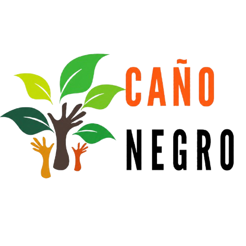
El sistema hídrico del Río Frío sostiene una notable diversidad de peces, desde el gaspar, considerado un fósil viviente, hasta especies clave para la pesca artesanal y deportiva de la comunidad.
Caño Negro, Los Chiles, Alajuela
Cada una de estas especies forma parte de la red alimenticia del humedal y de la relación histórica entre la comunidad de Caño Negro y su río.
Entre 49 y 55 especies de peces habitan los ríos y lagunas del refugio, desde depredadores grandes hasta pequeños peces de cardumen.
Muchas de estas especies son parte de la pesca artesanal y deportiva que practica la comunidad desde hace generaciones.
Algunas especies, como la tilapia o el pez diablo, no son nativas y compiten con la fauna acuática original del refugio.
Cuidar el río y respetar las regulaciones de pesca es clave para conservar esta diversidad para las próximas generaciones.
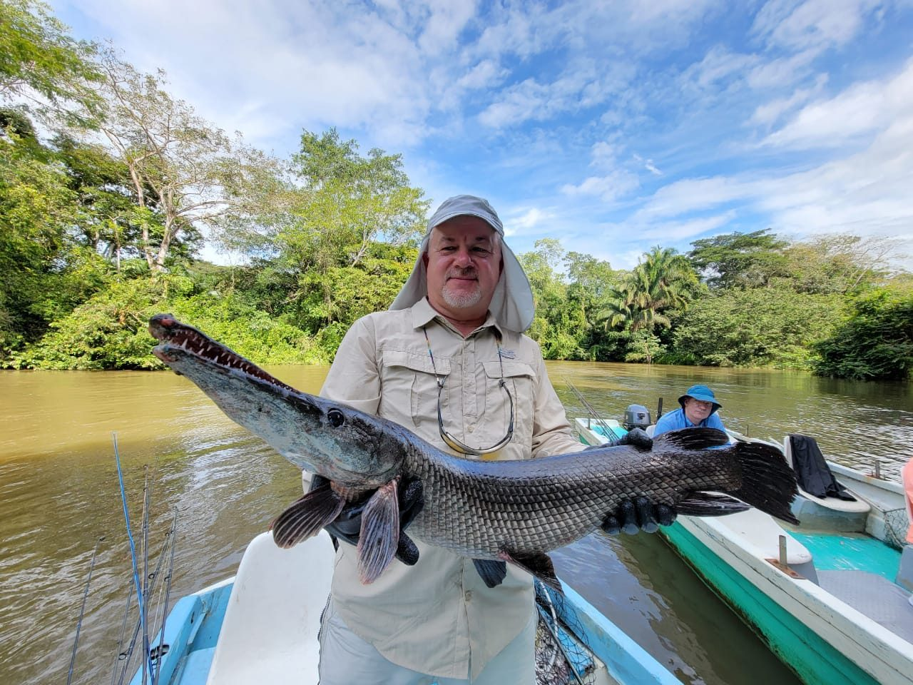
Conocido como "fósil viviente" por su aspecto prehistórico, es una de las especies más emblemáticas y protegidas del Río Frío.
Su cuerpo alargado y sus escamas duras en forma de placas lo hacen único entre los peces de agua dulce de la zona.
Puede respirar aire directamente en la superficie gracias a una vejiga natatoria muy vascularizada, una adaptación de millones de años.

Es uno de los cíclidos más grandes y buscados del refugio, reconocido por su fuerza y su comportamiento territorial.
Ambos padres cuidan activamente de las crías, defendiéndolas de otros peces mientras nadan cerca del fondo.
Es una de las especies más apreciadas de la pesca deportiva local por la fuerza con la que resiste al ser capturado.
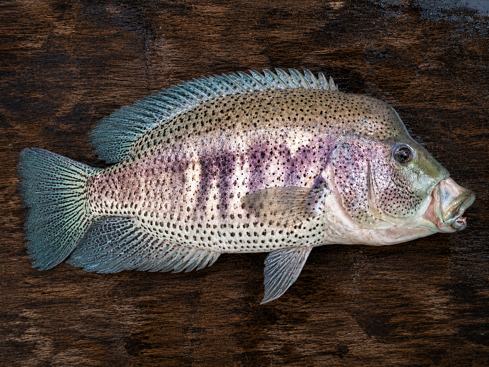
Se distingue del guapote común por su patrón de manchas oscuras irregulares sobre un cuerpo plateado.
Prefiere las aguas más tranquilas de las lagunas, donde caza otros peces pequeños entre la vegetación acuática.
En otras partes del mundo se le conoce como "jaguar guapote", en referencia a las manchas de su cuerpo.
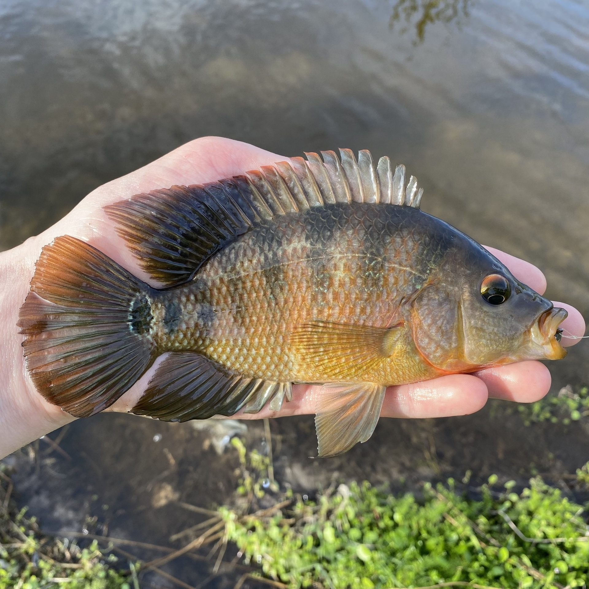
Nombre común para varios cíclidos de tamaño mediano que forman parte importante de la dieta acuática del río.
Se alimenta de algas, pequeños invertebrados y restos vegetales que encuentra entre las piedras y raíces sumergidas.
Suele nadar en cardúmenes, una estrategia que le ayuda a protegerse de depredadores más grandes como el guapote.
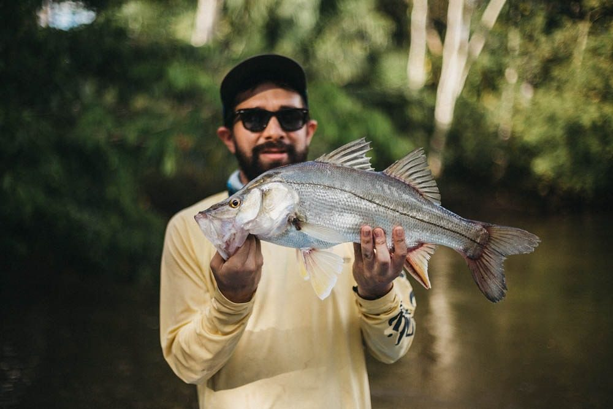
Es un pez plateado y alargado que se desplaza entre aguas dulces y salobres según su etapa de vida.
En el Río Frío se le encuentra sobre todo en sectores con corriente, donde caza peces más pequeños.
Es una especie migratoria: puede pasar parte de su vida en el mar y remontar ríos como el Frío para crecer y alimentarse.
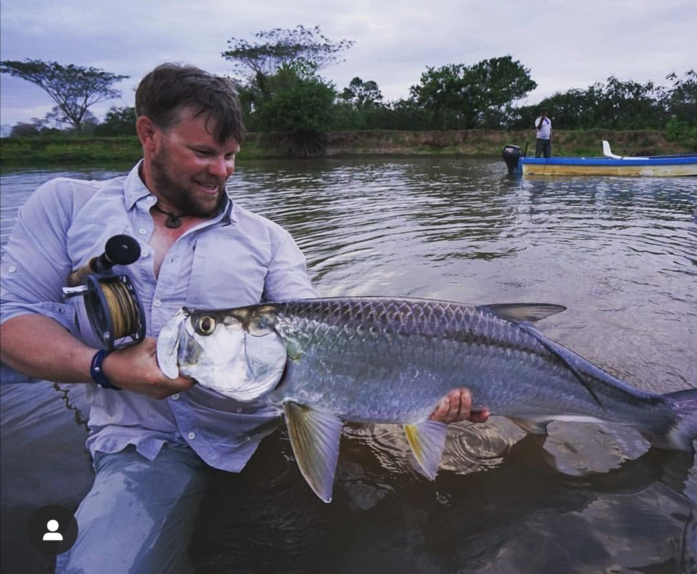
De cuerpo plateado y escamas grandes, es uno de los peces más grandes e impresionantes que se pueden encontrar en el río.
Es muy valorado en la pesca deportiva, principalmente por la fuerza y los saltos espectaculares que da al ser enganchado.
Puede respirar aire atmosférico gracias a su vejiga natatoria, lo que le permite sobrevivir en aguas con poco oxígeno.
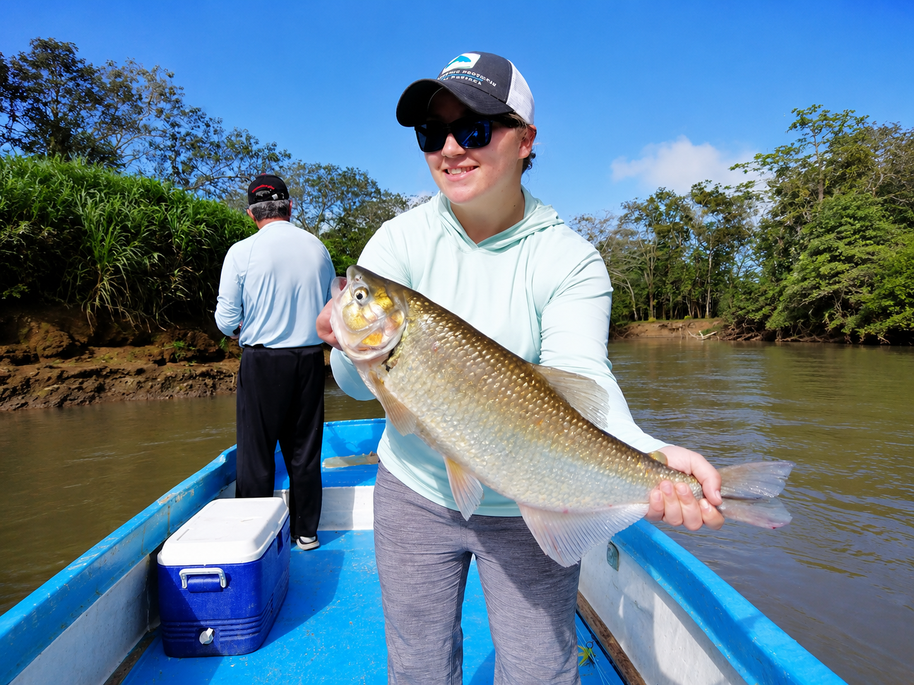
Es un pez ágil y plateado que nada en cardúmenes cerca de la superficie, muy activo durante todo el día.
Se alimenta de frutas, semillas e insectos que caen al agua desde los árboles que bordean el río.
Es capaz de saltar fuera del agua para atrapar frutos e insectos que cuelgan de las ramas bajas junto al río.

Es un pez de cuerpo robusto y cabeza ancha que pasa gran parte del tiempo inmóvil, esperando a sus presas.
Se oculta entre piedras, raíces y vegetación sumergida, desde donde emboscada a peces e invertebrados pequeños.
Su nombre en inglés, "sleeper", hace referencia a su comportamiento de permanecer casi inmóvil durante largos periodos antes de atacar.
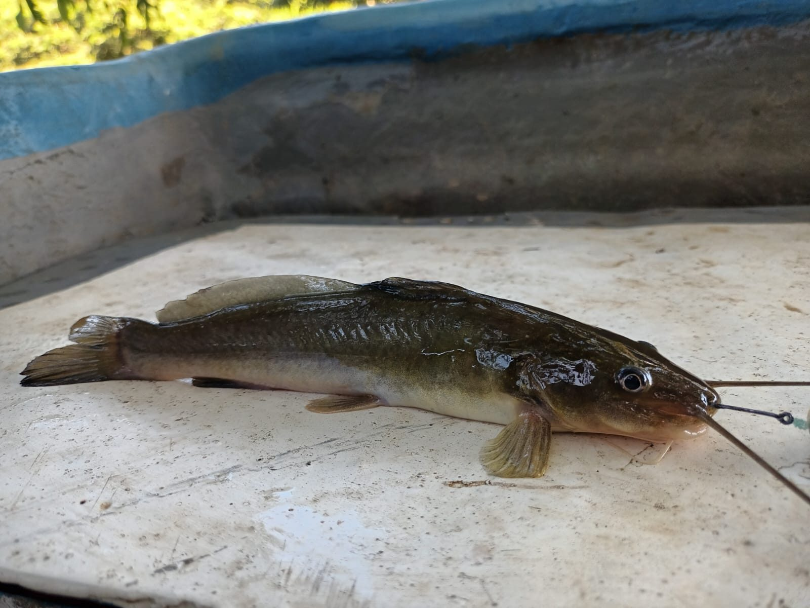
Es un bagre de hábitos nocturnos, reconocible por los barbillones alrededor de la boca que le dan su nombre.
Se mueve por el fondo del río, donde utiliza sus barbillones para detectar alimento incluso en aguas turbias.
Sus barbillones funcionan como órganos del gusto y el tacto, lo que le permite "saborear" el fondo del río en busca de comida.
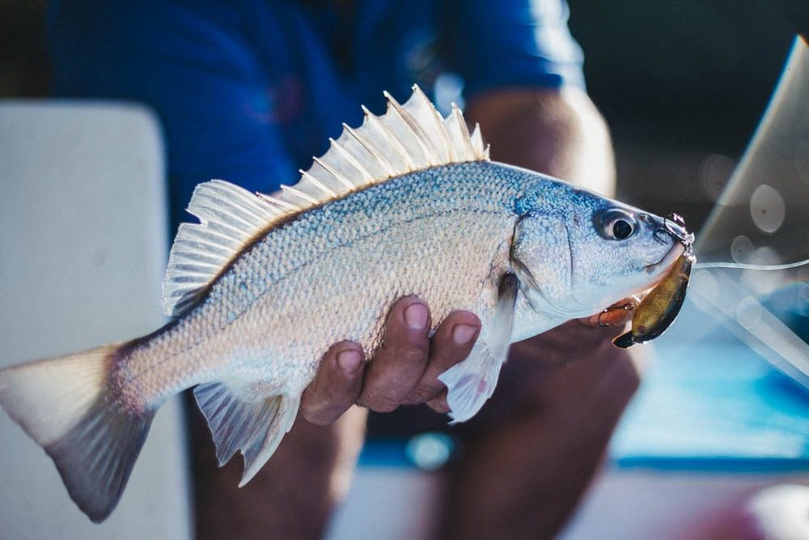
Es una especie introducida en el sistema del Río Frío, reconocible por el sonido similar a un ronquido que puede producir.
Se adapta con facilidad a distintos ambientes acuáticos, lo que le ha permitido establecerse en varios sectores del refugio.
Su nombre viene precisamente del sonido similar a un ronquido que produce, un rasgo poco común entre los peces del refugio.

Originaria de África, es una de las especies introducidas más extendidas en los ríos y lagunas de Costa Rica.
Se reproduce con facilidad y compite por alimento y espacio con especies nativas del refugio.
Las hembras incuban los huevos y a las crías recién nacidas dentro de su propia boca para protegerlas de depredadores.
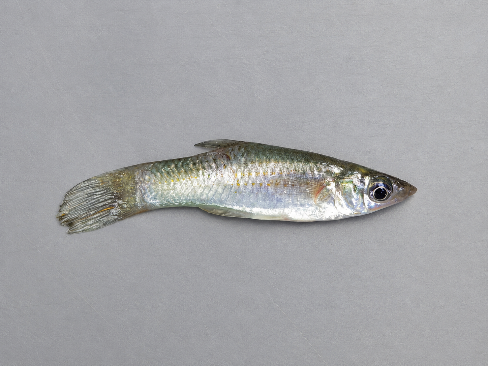
Es un pez pequeño que se desplaza en grandes cardúmenes cerca de la superficie del agua.
Es una pieza clave de la cadena alimenticia del río, al servir de alimento para peces y aves más grandes.
Por su tamaño y abundancia, es una de las carnadas naturales más usadas por los pescadores locales.
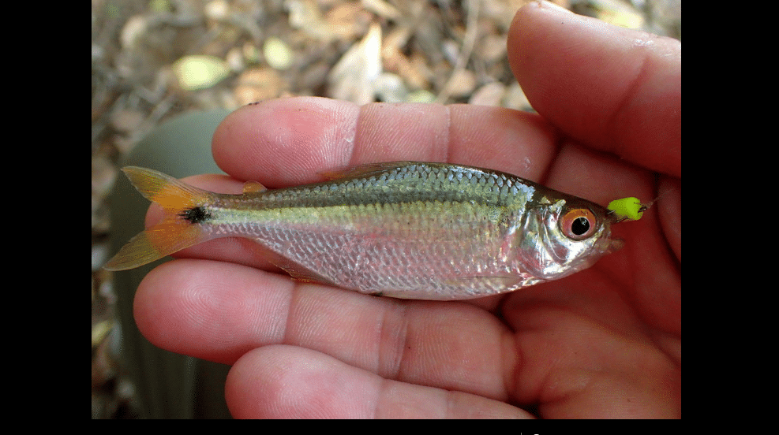
Pequeña y plateada, es una de las especies más abundantes del río, donde se mueve en cardúmenes densos.
Su presencia sostiene a numerosos depredadores, desde peces grandes hasta aves acuáticas que se alimentan de ella.
Al igual que el bobito, es utilizada tradicionalmente como carnada para pescar especies más grandes en el refugio.
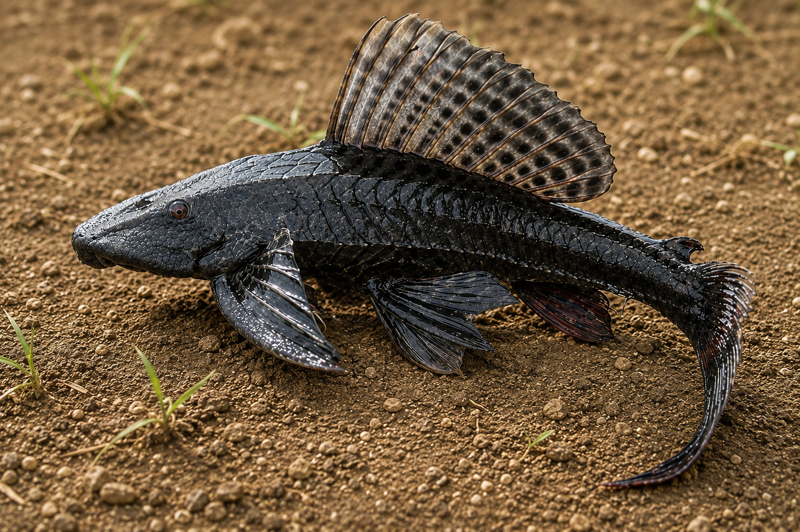
Reconocible por su cuerpo cubierto de placas óseas, es una especie introducida que se ha vuelto muy común en el sistema del río.
Se alimenta raspando algas y materia orgánica del fondo con su boca en forma de ventosa.
Su consumo no es recomendado y su presencia se considera perjudicial para el equilibrio de las especies nativas del refugio.
Descubre a los peces de Caño Negro, protagonistas silenciosos de un río que une la biodiversidad del refugio con la historia de su gente.
Se ubica en Los Chiles, Alajuela, Costa Rica, cerca de la frontera con Nicaragua.
Puedes acceder por la Ruta 138 desde Upala o Los Chiles. Usa el botón de ubicación para ver la ruta.
Más de 300 especies de aves, además de reptiles, mamíferos y una gran diversidad de flora.
Durante la estación seca para senderismo, o época lluviosa para ver aves migratorias.
Ropa cómoda, repelente, agua, cámara y protección solar.
Cambiando idioma...